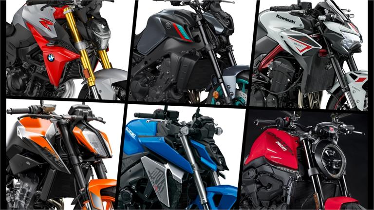
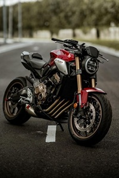
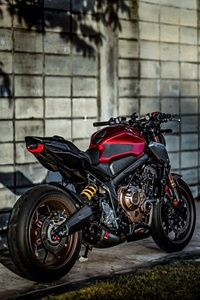
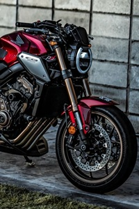
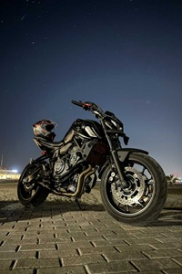
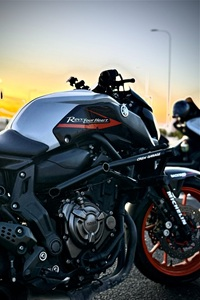
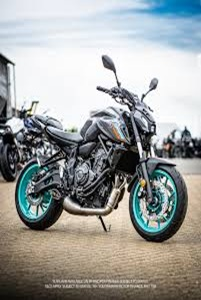
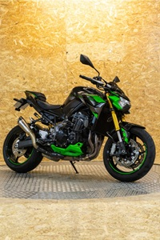
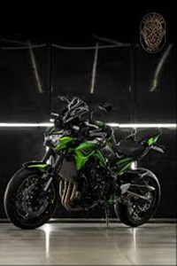
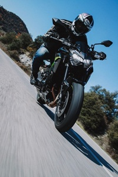

Mundo naked
Las mejores motos del mercado
El segmento de las motos naked es uno de los más efervescentes del
mercado. Su relación calidad/precio es, muy probablemente, el más
interesante y los amantes de las dos ruedas saben que por menos de
10 mil euros encontrarán una máquina con prácticamente toda la
tecnología que se pueda desear. Debido a ello, los fabricantes
trabajan constantemente en este segmento para mantenerse en la
cresta de la ola y, por si fuera poco, todos los modelos que os
presentamos hoy pueden limitarse para el carné A2 para enganchar a
todos aquellos que quieren empezar en este mundo con buen pie.

Hay dos tipos de motos las que se pueden conducir con el carnet de
moto A2: las de hasta 35 kW (47 CV) y con una relación de peso
potencia de 0,2 kW/kg y las limitadas a 47 CV que de origen no
excedan de 95 CV. Esta limitación se realiza mediante un kit
específico para cada moto cuyo coste varía y mucho dependiendo de
la marca, aunque hay algunas marcas que los ofrecen de manera
gratuita. Sin más preámbulos, descubramos las 10 naked limitables
más deseables para el carnet A2.


Top motos segun marca
Honda CB 650 R



La Honda CB650R es una naked de estilo Neo Sports Café, con un
motor 4 cilindros en línea de 649 cc que entrega 95 CV. Destaca
por su suavidad, su sonido característico y su calidad de
acabados. Es una moto equilibrada, cómoda y versátil, válida
tanto para ciudad como para rutas largas. Su comportamiento es
noble y su estética mezcla lo clásico y lo moderno. Es limitable
para el carnet A2.
Yamaha Mt-07



La Yamaha MT-07 es una naked ágil, ligera y muy divertida. Lleva
un motor bicilíndrico de 689 cc con 73,4 CV, con un par muy
aprovechable desde bajas revoluciones. Su bajo peso (184 kg) la
hace perfecta para ciudad y curvas, ofreciendo gran
manejabilidad y bajo consumo. Es una moto sencilla pero
efectiva, ideal para quienes buscan versatilidad, diversión y
economía. También es limitable para el carnet A2.
Kawasaki Z900



La Kawasaki Z900 es una naked de estética agresiva, potente y
con carácter. Monta un motor 4 cilindros de 948 cc, con 125 CV,
que ofrece una entrega suave pero contundente. Es cómoda,
estable y muy capaz tanto en ciudad como en carretera. Su sonido
es adictivo y su chasis tubular le da rigidez y ligereza. No es
apta para carnet A2, es una moto pensada para quienes buscan más
prestaciones y sensaciones deportivas.
Registrate para no perderte las ultimas novedades
Nombre:
Apellido:
Email:
Contraseña: